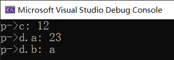

C 语言语法系列（19）：结构体
何为结构体？
前文我们学习了非常多的数据类型，比如基本的数据类型 int、float 等等，也学习了指针类型 int *、char * 类型，以及无类型指针类型 void *，数组 [] 和函数 ()。不过，这些基础数据类型并不能够满足我们的所有需求。比如，我们把“学生”看作一种类型，这个类型里包含一些基本信息，诸如成绩，学号姓名等等。这可能吗？
当然，今天要讲到的结构体（Structure）就是为了解决这种复合结构类型的基本知识点。
结构体的声明格式如下：
1 | struct 结构体名 |
比如，学生类型的书写格式是这样的：
1 | struct student |
也可以简写：
1 | struct student |
这样就定义好了一个结构体，这个结构体类型是 student 类型的。
请注意，这种特殊类型和函数一样，需要放在独立的位置上，而不是嵌套到函数里，这样全局级别才能访问到，否则我们就无法在想要的位置使用它们。当然，C 语言确实不允许把结构体的声明（定义）语句（上面那一坨）放进函数之中。
结构体的使用
我们尝试为结构体里的每一个成员赋值，并输出它们。不过，我们需要开始复杂一点的逻辑了。前文学过了如何声明堆内存，所以这里我们也可以使用这种东西来在堆内存里创建结构体变量。不过请注意，结构体是无法在栈内存里分配的，所以我们必须为其赋值。
1 | struct student |
变量类型是 student 类型，而这里作为一种结构体类型，我们需要书写的格式是
1 | struct student a = (struct student *)malloc(sizeof(struct student)); |
首先为堆内存里分配 student 类型足够使用的内存空间，然后把这块内存的地址返回给变量 a。注意，返回的类型是 void *，所以需要经过一次强制转换。
在完成分配后，判断一下它是否为 NULL 是一个好习惯。如果不为 NULL 则说明分配内存是成功的，于是我们开始为内部的所有信息点进行赋值。
它和数组不同，数组分配的空间是连续的，但由于数组内的所有元素的类型全是一样的，所以有索引这种东西的存在；而结构体里，我们不能保证所有自己写的字段的类型一样，所以我们确实没有办法通过索引器 [] 来获取每一个成员的信息，而是通过成员访问运算符 .（Member Access Operator）来取得它们。
不过，请注意，前文使用的是堆内存分配的模式，所以得到的分配结果显然是指针类型的，于是要将指针“拆解”为普通类型（取得内容），需要使用间接访问运算符 * 对指针变量加以修饰：*xiaoMing，这才是真正的“内容”。然后，我们对这个具体的结果再次使用成员访问运算符来取值：(*xiaoMing).age。请注意，这种取值需要为变量名和取内容运算符用小括号括起来。如果不括起来，C 语言将认为执行内容是先获取 xiaoMing.age，然后再对这个变量取内容（执行 * 取内容），而显然取内容是针对于指针变量而言的，但此时就算 xiaoMing.age 奏效，没有语法问题，而 age 字段是我们规定的数值类型的，而不是指针，所以 C 语言会为此报错，提示你“xiaoMing.age 不是一个指针类型”。
同理，其它的元素都可以使用这种方式进行赋值，但需要注意的是，字符串的赋值方式，一般我们不要去使用 scanf("%s", &字符指针或字符数组变量) 的模式，因为 scanf 函数向来都是不处理空格的，所以它遇到空格直接就认为是输入结束了；而名字里可能是英文名，所以此时是可能含有空格的，故我们需要使用 gets 函数来输入。
另外，gets 函数需要给定一个参数，这个参数必须是一个字符数组变量，而不是指针。指针并不能保证这个指向的内存块是可以被修改的，甚至不能保证这一块内存是可以被修改的。字符数组在声明期间就已经创建好了一系列内存空间，所以我们完全可以对其进行修改和使用。所以字符指针和字符数组的区别在于这一点：字符数组可修改内部元素，而字符指针不一定表示的是一个数组，而可能仅仅是一个普通的指针变量。前文说过，数组可以在赋值的时候退化为指针，但反之不然。
记得最后添加 free 函数释放资源，否则会造成内存泄漏的 bug。
我觉得 (*v).f 的访问模式太难写代码了，有没有简化版？
我也这么觉得，我们每次为字段赋值都得“无情地”加入小括号，然后才能往后加字段信息。这样写确实麻烦了。所以，C 语言提供了一个语法糖（简化版书写格式），叫指针成员访问成员运算符 ->（Pointer Member Access Operator）。
1 | int age1 = (*xiaoMing).age; |
仔细体会两种写法，这两种写法是等价的。由于 -> 符号和 . 符号都是访问运算符，所以这两个运算符挨着两边的英文单词（标识符），而不用在中间添加额外的空格。
一些烧脑的结构体使用模型
来一个可能会犯错的用法
我们尝试不为变量赋值，就开始为字段里放数据，看看会怎么样。
1 | int main(void) |
请注意，这种用法是错误的，而且很可能会引起报错。因为 variable 并没有赋值就开始用了，在 C 语言里规定，没有（成功）赋初始值的时候，变量都是不起作用的，即没有真正的内存可以对应上这个变量。于是我们对一个根本就不知道是哪里的对象进行赋值，或字段赋值，显然是不可能找到正确答案的。
其实，不只是这种情况，就连普通的变量也是如此：
1 | int a; |
这两种输出都不会得到你想要的结果。我知道你可能会认为这里的输出可能是 0，不过……
确实不一定真的是 0，有时候是一个莫名其喵的数字，看得头皮发麻。
结构体的嵌套声明模式
假设我们有两个结构体：
1 | struct a |
那么上文给出的 b 结构体类型是被允许的吗，即 b 结构体的某一个字段是别的结构体类型？
答案是，是的。我们完全可以创建一个结构体，使得这个结构体的 field 字段是另外一个结构体的类型。从逻辑上讲，这完全是不矛盾的。
不过，如果你创建这种类型的结构体，你需要注意初始化。假如我们现在有这样两个结构体：
1 | struct first |
并初始化一个 second 结构体类型的变量：
1 | struct second *p = (struct second *)malloc(sizeof(struct second)); |
然后对其进行赋值。
1 | p->c = 12; |
首先，p->d 是为了取出 p 指针指向的字段 d 的信息，它是 first 结构体类型的，而且不是指针；然后，对这个得到的结果再使用 . 成员访问运算符来获取字段 a 和 b 的信息，或者说赋值。
这样便可完成真正的赋值操作。
结构体的递归声明模式
前文我们说到，结构体内部是可以存放指针，也可以放普通变量的。那么，是否存在一种可能，让结构体（假设为 a 类型）内部也有一个 a 类型的字段呢，即：
1 | struct a |
这种写法是可以的吗？显然，我们从逻辑上说不通，因为我们要创建好一个 field 字段，由于它是 a 类型的结构体类型，所以我们就不得不先为结构体 a 类型创建好。但显然此时还在创建其中的字段，整个结构体并未完成创建，所以这是相违背的。
实际上确实如此。C 语言不允许递归声明：结构体类型内的字段不允许是当前结构体类型的，不过，你可以声明同样类型的结构体指针变量。
1 | struct a |
这样书写和存储是没有问题的，因为从道理上讲，ptr 字段在这里仅仅表示的是一个可以指向这个类型的地址信息罢了，它是一个地址，所以并不和结构体类型的本身有关，所以这样的声明方式是被允许的。而且，这种声明模式广泛存在于一些复杂的结构里，例如链表（Linked List），它具有一个数据字段（data）和一个下一节点地址的字段（next）；而这里的 data 字段就是指向下一个链表节点的，它依然是当前类型的，只不过是指针。
下面代码可以展示这一点：
1 |
|
输出的结果如下：

结构体的内存大小
对一个结构体变量使用 sizeof 会如何呢？前文不是就用到堆内存分配了吗？
这个数值实际上并不需要关心，但一般在考试题里会认为所有字段占据的内存空间的总和。但实际上并不一定是这样，结果可能比这个数值大一些，当然也可能是一样的。
举个例子。就前文的学生类型结构体，它由四个字段构成：
1 | struct student |
在内存里，很有可能存储的方式是这样的：
当然，我也只能说是“可能”，因为具体的分配模式是根据内存怎么样找起来快怎么分配的模式来分配的。如果这种分配方式，使得代码运算速度快的话，那么这种肯定就是内存里存储这个结构体的方式。也有可能把 age 拿到下面来，也可能把 isGirl 拿下来，等等。
不过，按照基本考试的方法，把它们所占字节数加起来就是整个结构体所占大小了：4 + 4 + 1 + 20 = 29 字节，所以，
sizeof(struct student)=sizeof(variable)= 29。